Flexure Test of Under Reinforced concrete Beam
Objective:
To study the flexure behaviour of under reinforced concrete beam.
Apparatus Materials:
Four point loading setup, dial gauge

 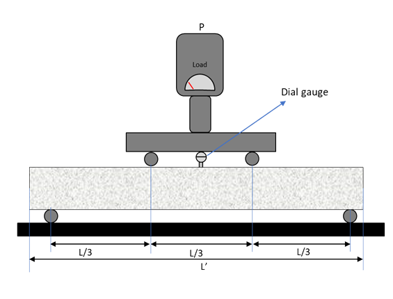
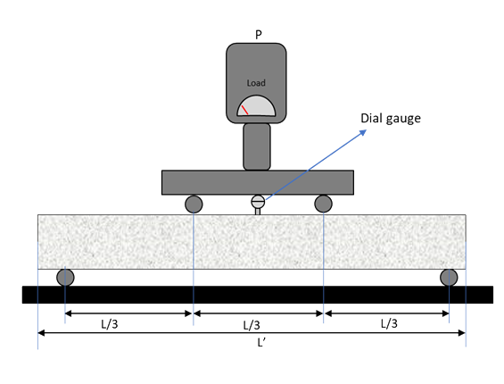
Specimen type:
Concrete Beam
Specimen Preparation
Make RC beam with given geometric and material properties.
Concrete cubes for compressive strength test – 3 nos.
Steel reinforcement, same as used in beam specimen for tensile strength test. 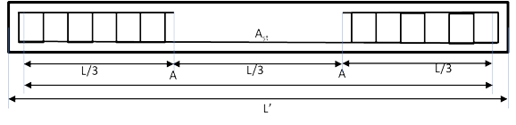

Steel reinforcement, same as used in beam specimen for tensile strength test. 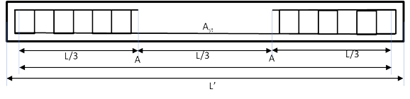
| L' | 2000 |
| L | 1800 mm |
| LAA | 600 mm |
| b | 150 mm |
| D | 200 mm |
| Cover | 25 mm (to shear reinforcement) |
| Ast | 2-12φ |
| Steel Grade | Fe500 |
| Concrete Grade | M25 |
STEP
1
Test three cube specimens in compression testing machine and determine the average value
of compressive strength. 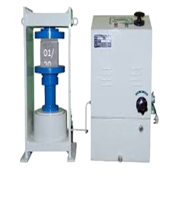
of compressive strength. 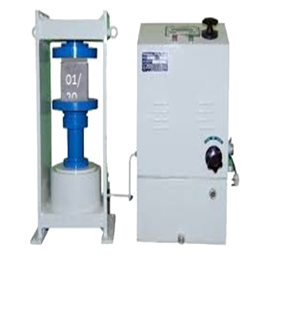
| Specimen | Compressive strength(MPa) |
| 1 | 35.11 |
| 2 | 34.44 |
| 3 | 30.88 |
| Average Cube Strength (fcm) | 33.50 |
STEP
2
Perform tensile strength test on the reinforcement and determine the average value of the yield strength
| Specimen | Yield strength (MPa) |
| 1 | 532 |
| 2 | 518 |
| 3 | 522 |
| Average Yield Strength (fym) | 524 |
STEP
3
Place the RC beam specimen on the loading points. Ensure an acceptable contact between the
specimen and loading points.
specimen and loading points.
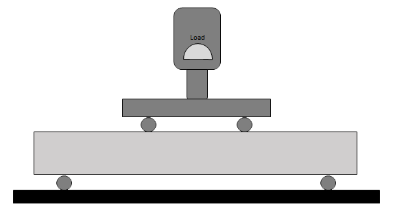
STEP
4
Apply the load at a uniform rate at 10 KN load increments and observe the development of the cracks.
Note the deflection at each 10 kN increment.
 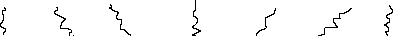
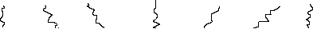
Note the deflection at each 10 kN increment.
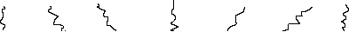
STEP
5
After failure, fit the broken halves together and measure the final ‘gauge’ length, Lf.


 71.39 mm
71.39 mm
71.39 mm
Observations and calculations
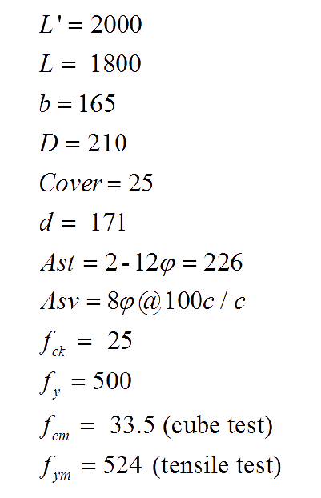
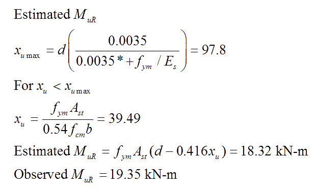
| Sr. No. |
Load (kN) |
Mid span deflection (mm) |
Moment at mid span (kN-m) = PL/6 |
| 1 | 0 | 0 | 0 |
| 2 | 10 | 0.425 | 3 |
| 3 | 20 | 1.715 | 6 |
| 4 | 30 | 3.315 | 9 |
| 5 | 40 | 4.570 | 12 |
| 6 | 50 | 5.960 | 15 |
| 7 | 60 | 9.895 | 18 |
| 8 | 64.52 | 26.600 | 19.35 |
Observations and calculations
Report
- Grade of concrete = M25
- Mean cube strength of concrete = 33.5 MPa
- Grade of reinforcement = Fe500
- Mean yield strength of steel (MPa) = 524 MPa
- Estimated ultimate moment of resistance as per IS:456 (2000) = 18.32 kN-m
- Observed ultimate moment of resistance = 19.35 kN-m